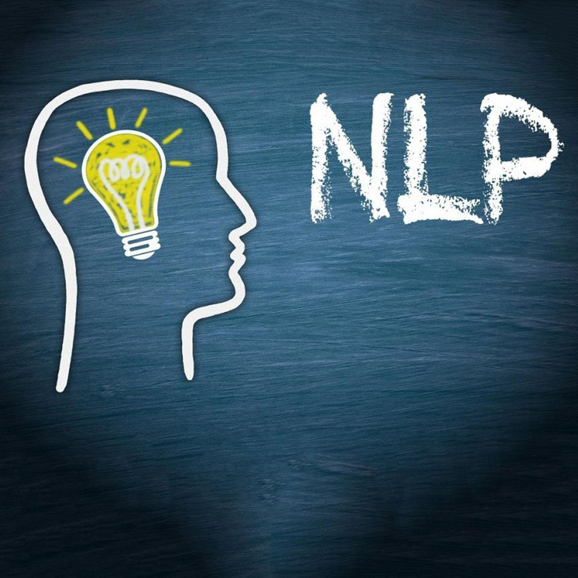

Fifth studio album
Smart traffic management: refers to the efficient management and control of transportation systems using modern information technology, communication technology, control technology, sensing technology, and artificial intelligence.
Natural language processing: refers to how machine can understand human language in the real world and to interact with it. It is widely used today in searching engine, chat apps etc.
Machine learning: can be roughly divided into the following categories: Supervised Learning, Unsupervised Learning, Semi-supervised Learning, Reinforcement Learning.
- 

Seventh studio album
Love Letter
Eleventh studio album
Life Trajectory
The scroll bar below shows some interesting animations. The first picture comes from 'spy familly'. The second picture comes from 'Jujutsu Kaisen'. The third picture comes from 'Please eat the little red bean'.
You can use the slider to view different images.
Spy family tells a story about a famliy which has a killer mother, a spy father and a super power daughter.
Jujutsu Kaisen tells a story about how people fight against monsters to protect human beings.
Please eat the little red bean tells a story about the daily life of a red bean who wants to be eaten.